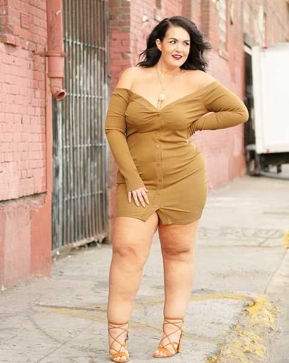
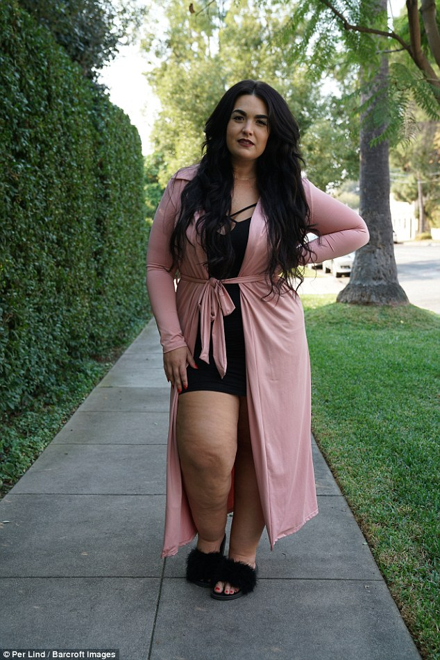
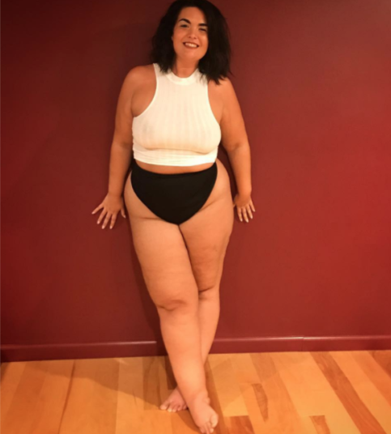
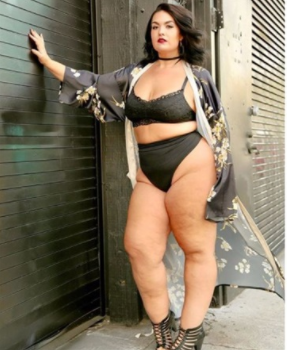
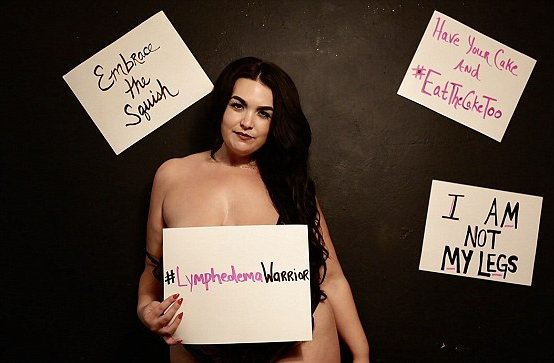

Carmen Smith





influencers
Kahari Jumal
Carmen Smith's husband and main supporter/influencer in life. Kahari made her feel confident in the way she looked as well as help her come out to the world and embrace her self-beauty.

Followers like Candy Ricon inspired her to go on as well as hearing from people who went through the same conditions as she was and them letting her know she was helping them deal with how they viewed themselves helped her infact encouraged her to keep going.
carmen smith is famous for inspiring women with and without lymphedema to be confident and comftorable in their own skin by showing that size dosent matter through instagram post. some of her first images were taken in lingerie and various items with signs held up directed to people with the same condition. soon enough women came forward giving their life stories and telling her how they started to feel more comftorable in their own skin because now they had finally seen someone in the industy the same size as them facing the same conditions looking just as good or even beter than everyone else.
